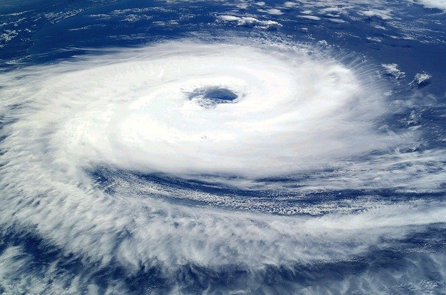
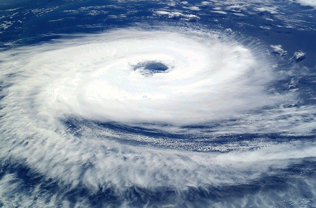

生物は環境と相互作用しながら生きています。 私たち人間はその自然や動植物からの恵を受けながら生活しています。それを生態系サービスと言います。 ですが、普段から自然や動植物の存在を意識しながら生活している人は多くないと思います。 そこでどういった恩恵をどのように受けているのか、またなぜ生物多様性を維持する必要があるのかを説明したいと思います。生態系サービスは多岐に渡りますが大きく４つにまとめられています。
基盤サービスとは生態系サービスの中でも生命存立の基盤となるサービスのことを言います。また生息・育成地サービスとも呼ばれます。具体的な内容としては、『生息・育成環境の提供』『遺伝的多様性の維持』です。
『生息・育成環境の提供』は、様々な生態系を利用する生物に生息・育成環境を提供し、そのライフスタイルを維持するというものです。いかなる種のライフサイクルも他の多くの生産物また生物的環境によって支えられています。例えば、酸素の供給や二酸化炭素の吸収、気温や水供給の安定、窒素やリンなどの栄養塩の循環、土壌の形成などの役割を果たしています。
このような要素が相対的に豊かな生態系を育み、自然の物質循環を可能にしています。全ての生命の生存基盤である環境は、このような自然の循環を基盤とする生物の多様性が維持されることによって成り立っています。
>


多様な生物は食べ物や衣服、薬、品種改良の素材、デザインのヒントまで多くの人間の生活に重要な資源を提供しています。これを供給サービスと言います。私たちは様々な形で生物資源を利用しています。つまり多様な生物の存在が私たちの生活を支えています。特に面白いと思うのはデザインのヒントです。例えばヨーグルトの蓋はハスの葉の水を弾く効果を参考にしていたり、競泳水着は鮫肌の水の抵抗の少なさを参考にしています。他にもまだまだあります。このように生物が持っている優れた機能や体構造からヒントをえたデザインのことをバイオミメティクスデザインと言います。バイオミメティクスデザインを知ることでより生物から受けている恩恵の大きさを感じられるのではないでしょうか。

私たちは自然に順応した形で様々な知識、技術、感性、美意識を培ってきました。このような私たちの文化の根元となるサービスのことを文化的サービスと言います。地域の自然と文化が一体になった風土は、地域固有の生物多様性と深く関係しています。例えば竹細工・木工品・草木染めといったの工芸や芸能、食文化などです。食文化で言うと料理によって材料や調理法など地域によって様々な特色があります。しかし現代では地域固有の生物の減少が進み、地域の伝統的な食文化は失われつつあるのです。他には魚釣りや海水浴、登山や紅葉狩りなど生態系から得られる精神的な充実、豊かな感性・美意識の醸成、レクリエーションの機会が提供されることも文化的サービスに含まれます。
私たちの暮らしは、生物多様性が保全された生態系によって支えられています。水質浄化や気候の調整、自然災害の防止や被害の軽減、病害虫の抑制など大きな役割を果たしています。例えば森林は適正な管理や間伐などの調整によって植生が健全に保たれ、多様な生物が育まれるとともに空気循環能力の高い森林が維持されています。また、山地災害の防止や土砂流失防止など国土の保全にも貢献しています。さらに森林が台風などの被害から農地などを守っているという事例もあります。このように暮らしの安全性の基礎となるサービスのことを調整サービスと言います。

 
